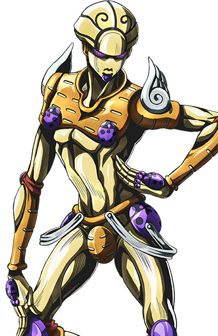
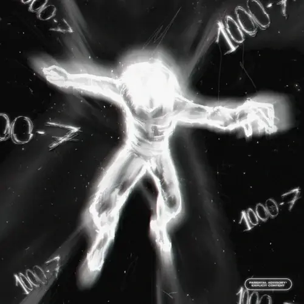

Всем привет!На этом сайте я вам расскажу про главных героев некоторых аниме.
Что такое аниме?
Аниме — японская мультипликация. В отличие от мультфильмов других стран, предназначенных в основном для просмотра детьми, большая часть выпускаемого аниме рассчитана на подростковую и взрослую аудитории, и во многом за счёт этого имеет высокую популярность в мире.Аниме отличается характерной манерой отрисовки персонажей и фонов. Сюжеты могут описывать множество персонажей, отличаться разнообразием мест и эпох, жанров и стилей.
И у нас на очереди первое аниме-Невероятные приключения ДжоДжо
Вселенная JoJo’s Bizarre Adventure является отражением реального мира, в котором некоторые из людей способны преобразовывать внутреннюю духовную силу в «стенды» , другая известная форма энергии — «хамон» . Каждая часть — это независимая история с разными действующими лицами. Главных героев объединяет принадлежность к общему семейному древу Джостаров, о чём свидетельствует родимое пятно в виде звезды на левой части шеи, а также способность применять в бою хамон или стенд.
Первый главный герой JoJo является Джонатан Джостар
Джонатан Джостар - сын Джорджа Джостара I, который с гордостью носит свою фамилию, стараясь быть джентльменом, который никогда не изменяет своему кодексу чести и защищает тех, кто в нем нуждается.Его способности заключаются в хамоне(Хамон- энергия, используемая в древней форме боевых искусств.Благодаря контролю своего дыхания, человек обученный технике Хамона, может производить энергию, идентичную солнцу, которая проявляется в виде ряби по всему телу).
Джотаро Куджо — главный герой части 3, а также появляется в частях 4-6.Джотаро живет обычной жизнью, пока не возвращается старый враг семьи Джостаров , Дио . Джотаро отправляется в Египет, чтобы спасти свою мать и раз и навсегда остановить великого убийцу.Обладая невероятно мощным Star Platinum , Джотаро является первым ДжоДжо, представленным со стендом , и является одним из самых известных персонажей серии.Он обладает одним из самых сильных стендов в аниме Star Platinum(Звёздная платина).
Star Platinum обладает сверхчеловеческими чувствами, силой, выносливостью, точностью и скоростью. Как и другие физически мощные (или ближнего действия) стенды, Star Platinum имеет узкий диапазон активности; активен только в радиусе 2-3 метров от Джотаро.И ещё у него есть способность остановка времени.
Джорно Джованна — главный герой части 5 и пятый ДжоДжо в серии JoJo's Bizarre Adventure . Джорно — внебрачный сын Дио , зачатый с украденным телом Джонатана Джостара . Он говорит о своем намерении присоединиться к могущественной банде Passione и о своей мечте стать «звездой банды». Джорно - подросток среднего роста, стройного, но мускулистого телосложения.Джорно — прирожденный пользователь стенда gold experience.

Gold Experience — один из самых универсальных стендов в серии. У него есть способность создавать жизнь и управлять ею, которую Джорно чаще всего использует для производства растений и мелких животных.Как силовой тип ближнего действия, он также способен наносить быстрые удары, которые Джорно использует почти исключительно со смертельным намерением.Ещё у него есть улучшенная версия стенда - Gold Experience Requiem
Gold Experience Requiem
Gold Experience Requiem может похвастаться невероятной физической силой и сохраняет свою способность давать жизнь со значительным усилением. Кроме того, он получил возможность помешать своим противникам «достичь истины». Тот, кто будет убит Реквиемом, также «никогда не узнает правду о своей смерти», заставляя его попасть в петлю смерти на всю вечность. Его способность превосходит большинство способностей Стенда, поскольку он является Стендом Реквиема.
Гуль — плотоядный и людоедский вид, способный питаться только людьми или другими гулями. Они настолько схожи с людьми, насколько это возможно: как правило, они обладают тем же внешним обликом и столь же развитым интеллектом, однако их рацион, менталитет и внутреннее строение немного отличаются от человеческого.Гули обладают высокими физическими данными, что делает их гораздо сильнее обычного человека: ударив с достаточной силой, они способны подбросить человека в воздух или же пробить его тело насквозь.Помимо этого, высота их прыжков может достигать нескольких метров.В обычных условиях гули обладают высокой регенеративной способностью. Незначительные ранения и переломы заживают за считанные часы; более серьезные раны затягиваются в течение нескольких дней, если гуль обладает достаточным запасом пищи.

Главный герой этого аниме Канеки Кен
До начала событий серии Канеки был самым обыкновенным студентом-первокурсником, учившимся в университете Камии на литературном факультете. В результате трагедии на стройке, в которую Кен оказывался вовлечён, он попадает в госпиталь, где его спасают от смерти путём трансплантации органов погибшей Ризе Камиширо. Однако операция повлекла за собой неожиданные для Канеки ужасающие последствия: он становится гибридом человека и гуля.Кен унаследовал какухо Ризе, что наделило его способностью использовать её кагуне, аномальной регенерацией и увеличенной физической силой. Поскольку Канеки является гибридом, потенциал его способностей выше, чем у среднестатистического полноценного гуля.Ринкаку-кагуне: унаследованный от Ризе кагуне в точности повторял изначальную форму, коей обладал у донора. Будучи представителем ринкаку-типа, Канеки обладает огромной грубой силой, позволяющей наносить серьёзные повреждения противникам. Чешуйчатая структура кагуне при ударах спиливает плоть и Rc-клетки противника подобно напильнику. С течением времени и опытом Канеки базовые формы претерпевали изменения.
Наруто Узумаки— шиноби клана Узумаки Конохагакуре . Он стал джинчурики Девятихвостого в день своего рождения — судьба, из-за которой большая часть Конохи избегала его на протяжении всего детства. Присоединившись к Команде Какаши , Наруто усердно работал, чтобы получить признание деревни, все время преследуя свою мечту стать Хокаге . В последующие годы, пройдя множество невзгод и испытаний, он стал способным ниндзя, которого жители деревни, а вскоре и весь остальной мир считали героем, став известным какГерой Скрытого ЛистаВскоре он оказался одним из главных факторов победы в Четвертой мировой войне Ниндзя, что привело его к осуществлению своей мечты и становлению Седьмым Хокаге деревни.
Изначально Наруто был довольно неумелым ниндзя, трижды не сумевшим окончить Академию . Однако благодаря чистой решимости и тренировкам его навыки быстро улучшились.Будучи естественным бойцом ближнего боя, Наруто изначально был неспособен к тайдзюцу, требуя непредсказуемых атак, чтобы удивить боевых экспертов, таких как Киба Инузука и Неджи.Он часто использовал теневых клонов в большом, если не массовом количестве, чтобы просто сокрушить своих врагов.Первоначально будучи джинчурики Ян-половины Курамы, Наруто имел доступ к огромным запасам исключительно мощной чакры, которая была как минимум в сто раз больше, чем у Какаши. Эти уровни чакры были увеличены еще больше, когда половина Инь Курамы воссоединилась с половиной Ян внутри Наруто. Из-за того, что он унаследовал уникальные способности чакры своей матери и был джинчурики Курамы практически на протяжении всей своей жизни, чакра Наруто правильно смешалась с чакрой лиса, позволяя ему беспрепятственно выполнять несколько техник, требующих чакры.
Изначально он мог получить доступ к чакре Курамы только во время сильного гнева. Это усилило способности Наруто, но негативное влияние лиса сделало Наруто более агрессивным.Состояние версии 1 , проявление четырех хвостов, вызовет состояние версии 2 , из-за которого он потеряет контроль и постепенно превратится в еще более дикие формы, требующие посторонней помощи, чтобы подавить силу Курамы и восстановить контроль, побуждая его по возможности избегать полагаться на силу лиса. . К концу Четвертой Великой Войны Шиноби он смог получить доступ к своей форме Версии 1 без какой-либо потери своего менталитета.